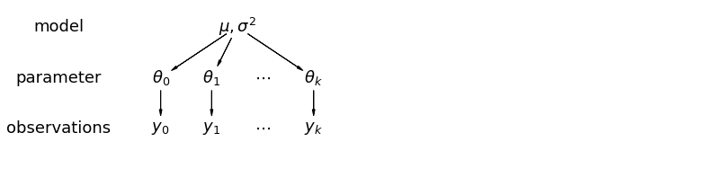

LFP example¶
import altair as alt
from bayes_window import BayesWindow, models, BayesRegression, LMERegression
from bayes_window.generative_models import generate_fake_lfp
try:
alt.renderers.enable('altair_saver', fmts=['png'])
except Exception:
pass
Make and visualize model oscillation power¶
40 trials of “theta power” is generated for every animal. It is drawn randomly as a poisson process.
This is repeated for “stimulation” trials, but poisson rate is higher.
# Draw some fake data:
df, df_monster, index_cols, _ = generate_fake_lfp(mouse_response_slope=15, n_trials=30)
Mice vary in their baseline power.
Higher-baseline mice tend to have smaller stim response:
BayesWindow(df=df, y='Log power', treatment='stim', group='mouse').plot(x='mouse').facet(column='stim')
BayesWindow(df=df, y='Log power', treatment='stim', group='mouse', detail='i_trial').data_box_detail().facet(
column='mouse')
Fit a Bayesian hierarchical model and plot slopes¶
In a hierarchical model, parameters are viewed as a sample from a population distribution of parameters. Thus, we view them as being neither entirely different or exactly the same. This is partial pooling:
 This model allows intercepts to vary across mouse, according to a random effect. We just add a fixed slope for the predictor (i.e all mice will have the same slope):
where:
\(j\) is mouse index
\(i\) is observation index
\(y_i\) is observed power
\(x_i\) is 0 (no stimulation) or 1 (stimulation)
\(\epsilon_i \sim N(0, \sigma_y^2)\), error
\(\alpha_{j[i]} \sim N(\mu_{\alpha}, \sigma_{\alpha}^2)\), Random intercept
We set a separate intercept for each mouse, but rather than fitting separate regression models for each mouse, multilevel modeling shares strength among mice, allowing for more reasonable inference in mice with little data.
The wrappers in this library allow us to fit and plot this inference in just three lines of code. Under the hood, it uses the following Numpyro code:
# Given: y, treatment, group, n_subjects
# Sample intercepts
a = sample('a', Normal(0, 1))
a_subject = sample('a_subject', Normal(jnp.tile(0, n_subjects), 1))
# Sample variances
sigma_a_subject = sample('sigma_a', HalfNormal(1))
sigma_obs = sample('sigma_obs', HalfNormal(1))
# Sample slope - this is what we are interested in!
b = sample('b_stim', Normal(0, 1))
# Regression equation
theta = a + a_subject[group] * sigma_a_subject + b * treatment
# Sample power
sample('y', Normal(theta, sigma_obs), obs=y)
Above is the contents of model_hier_stim_one_codition.py, the function passed as argument in line 4 below.
# Initialize:
window = BayesRegression(df=df, y='Power', treatment='stim', group='mouse')
# Fit:
window.fit(model=models.model_hierarchical, add_group_intercept=True,
add_group_slope=False, robust_slopes=False,
do_make_change='subtract', dist_y='gamma')
chart_power_difference = (window.chart + window.chart_posterior_kde).properties(title='Posterior')
2021-11-25 02:47:56.387633: E external/org_tensorflow/tensorflow/stream_executor/cuda/cuda_driver.cc:271] failed call to cuInit: CUDA_ERROR_COMPAT_NOT_SUPPORTED_ON_DEVICE: forward compatibility was attempted on non supported HW
2021-11-25 02:47:56.387769: E external/org_tensorflow/tensorflow/stream_executor/cuda/cuda_diagnostics.cc:313] kernel version 450.142.0 does not match DSO version 450.156.0 -- cannot find working devices in this configuration
chart_power_difference
In this chart:
The black line is the 94% posterior highest density interval
Shading is posterior density
Barplot comes directly from the data
# TODO diff_y is missing from data_and posterior
# chart_power_difference_box
window.data_and_posterior.rename({'Power': 'Power diff'}, axis=1, inplace=True)
# window.plot(x=':O',independent_axes=True).properties(title='Posterior')
window.chart
In this chart:
The blue dot is the mean of posterior
The black line is the 94% highest density interval
The boxplot is made from difference between groups in the data (no fitting)
Left Y scale is for posterior, right for data
Compare to non-bayesian approaches¶
Off-the-shelf OLS ANOVA¶
ANOVA does not pick up the effect of stim as significant:
window = LMERegression(df=df, y='Log power', treatment='stim', group='mouse')
window.fit_anova();
Log_power~stim
sum_sq df F PR(>F)
stim 0.12 1.0 5.11 0.04
Residual 0.32 14.0 NaN NaN
window = LMERegression(df=df, y='Log power', treatment='stim')
window.fit_anova();
Log_power~stim
sum_sq df F PR(>F)
stim 3.50 1.0 34.06 0.0
Residual 49.19 478.0 NaN NaN
window = LMERegression(df=df, y='Power', treatment='stim', group='mouse')
window.fit_anova();
Power~stim
sum_sq df F PR(>F)
stim 21290.79 1.0 1.43 0.25
Residual 208467.85 14.0 NaN NaN
window = LMERegression(df=df, y='Power', treatment='stim')
window.fit_anova();
Power~stim
sum_sq df F PR(>F)
stim 6.387237e+05 1.0 2.06 0.15
Residual 1.483123e+08 478.0 NaN NaN
Including mouse as predictor helps, and we get no interaction:
window.fit_anova(formula='Log_power ~ stim + mouse + mouse*stim');
Log_power ~ stim + mouse + mouse*stim
sum_sq df F PR(>F)
mouse 8.00 7.0 13.39 0.00
stim 3.50 1.0 41.09 0.00
mouse:stim 1.61 7.0 2.70 0.01
Residual 39.58 464.0 NaN NaN
OLS ANOVA with heteroscedasticity correction¶
window.fit_anova(formula='Power ~ stim + mouse ', robust="hc3");
Power ~ stim + mouse
sum_sq df F PR(>F)
mouse 8.797198e+06 7.0 4.08 0.00
stim 6.267476e+05 1.0 2.03 0.15
Residual 1.452194e+08 471.0 NaN NaN
window.fit_anova(formula='Log_power ~ stim +mouse', robust="hc3");
Log_power ~ stim +mouse
sum_sq df F PR(>F)
mouse 8.91 7.0 14.55 0.0
stim 3.44 1.0 39.32 0.0
Residual 41.19 471.0 NaN NaN
A linear mixed-effect model shows the effect of stim (slope) as significant. It includes intercepts of mouse, which also vary significantly:
# Initialize:
window = LMERegression(df=df, y='Log power', treatment='stim', group='mouse')
window.fit(add_data=False);
Using formula Log_power ~ C(stim, Treatment) + (1 | mouse)
Coef. Std.Err. z P>|z| [0.025 0.975]
Intercept 1.906 0.042 45.516 0.000 1.824 1.988
C(stim, Treatment)[T.1] 0.171 0.027 6.330 0.000 0.118 0.224
1 | mouse 0.054 0.009 6.205 0.000 0.037 0.071
Group Var 0.002 0.006
/home/m/env_jb1/lib/python3.8/site-packages/statsmodels/regression/mixed_linear_model.py:2237: ConvergenceWarning: The MLE may be on the boundary of the parameter space.
warnings.warn(msg, ConvergenceWarning)
chart_power_difference_lme = window.plot().properties(title='LME')
chart_power_difference_lme
Compare LME and Bayesian slopes side by side¶
chart_power_difference | chart_power_difference_lme
Inspect Bayesian result further¶
Let’s take a look at the intercepts and compare them to levels of power in the original data:
# Initialize:
window = BayesRegression(df=df, y='Power', treatment='stim', group='mouse', detail='i_trial')
# Fit:
window.fit(model=models.model_hierarchical, add_group_intercept=True,
add_group_slope=False, robust_slopes=False,
do_make_change='subtract', dist_y='gamma');
chart_detail_and_intercepts = window.plot_intercepts(x='mouse')
window.chart_posterior_intercept
chart_detail_and_intercepts
Our plotting backend’s flexibility allows us to easily concatenate multiple charts in the same figures with the | operator:
window.chart_posterior_intercept | chart_power_difference | chart_power_difference_lme
Check for false-positives with null model¶
They sometimes appear with non-transformed data + “normal” model
# Initialize:
df_null, df_monster_null, _, _ = generate_fake_lfp(mouse_response_slope=0, n_trials=30)
window = BayesRegression(df=df_null, y='Power', treatment='stim', group='mouse')
# Fit:
window.fit(model=models.model_hierarchical, add_group_intercept=True,
add_group_slope=False, robust_slopes=False,
do_make_change='subtract', dist_y='normal')
# Plot:
chart_power_difference = window.plot(independent_axes=False,
).properties(title='Posterior')
chart_power_difference
This does not happen if we estimate group slopes.
GLM is more robust to no differences in the case of no effect:
# Initialize:
window = BayesRegression(df=df_null, y='Power', treatment='stim', group='mouse')
# Fit:
window.fit(model=models.model_hierarchical, add_group_intercept=True,
add_group_slope=False, robust_slopes=False,
do_make_change='subtract', dist_y='gamma')
# Plot:
window.plot(independent_axes=False,
).properties(title='Posterior')
Include all samples in each trial¶
The mean of every one of the 30 trials we drew for each mouse is a manifestation of the same underlying process that generates power for each mouse. Let’s try to include all samples that come in each trial
# NBVAL_SKIP
# Initialize:
window = BayesRegression(df=df_monster, y='Power', treatment='stim', group='mouse')
# Fit:
window.fit(model=models.model_hierarchical, add_group_intercept=True,
num_warmup=500, n_draws=160, progress_bar=True,
add_group_slope=False, robust_slopes=False,
do_make_change='subtract', dist_y='gamma');
# NBVAL_SKIP
alt.data_transformers.disable_max_rows()
chart_power_difference_monster = window.plot(independent_axes=False).properties(title='Posterior')
chart_power_difference_monster
Much tighter credible intervals here!
Same with linear mixed model:
# NBVAL_SKIP
window = LMERegression(df=df_monster,
y='Log power', treatment='stim', group='mouse')
window.fit()
chart_power_difference_monster_lme = window.plot().properties(title='LME')
chart_power_difference_monster_lme
Using formula Log_power ~ C(stim, Treatment) + (1 | mouse)
/home/m/env_jb1/lib/python3.8/site-packages/statsmodels/regression/mixed_linear_model.py:2237: ConvergenceWarning: The MLE may be on the boundary of the parameter space.
warnings.warn(msg, ConvergenceWarning)
Coef. Std.Err. z P>|z| [0.025 0.975]
Intercept 1.941 0.040 48.484 0.000 1.862 2.019
C(stim, Treatment)[T.1] 0.149 0.002 70.655 0.000 0.145 0.153
1 | mouse 0.050 0.009 5.761 0.000 0.033 0.067
Group Var 0.003 0.006
# NBVAL_SKIP
(chart_power_difference_monster | chart_power_difference_monster_lme)